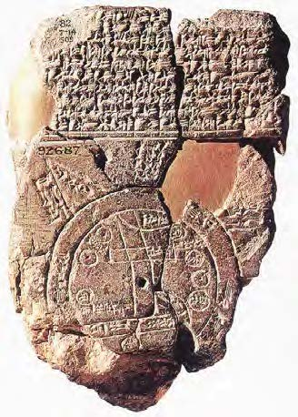
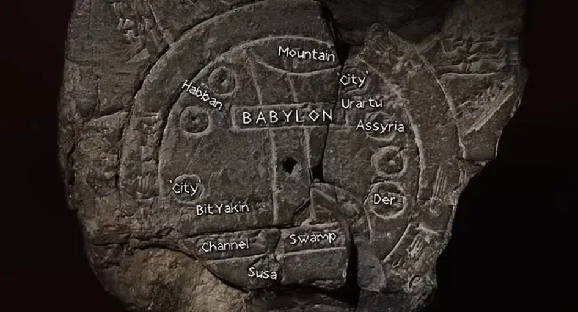
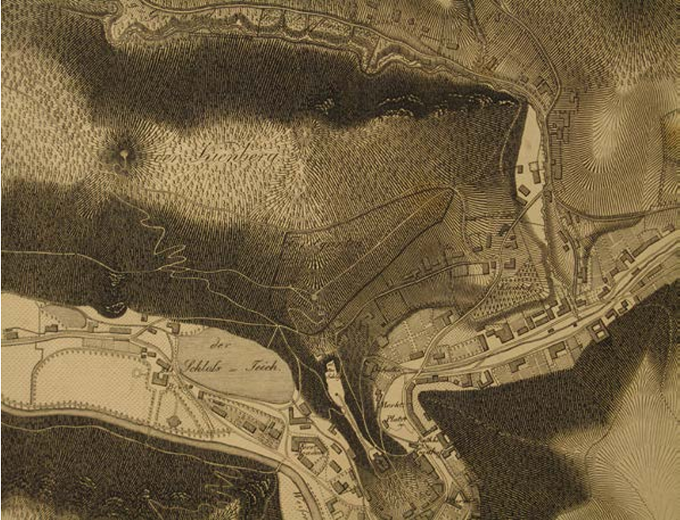
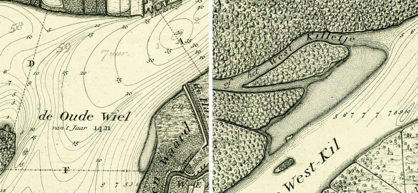
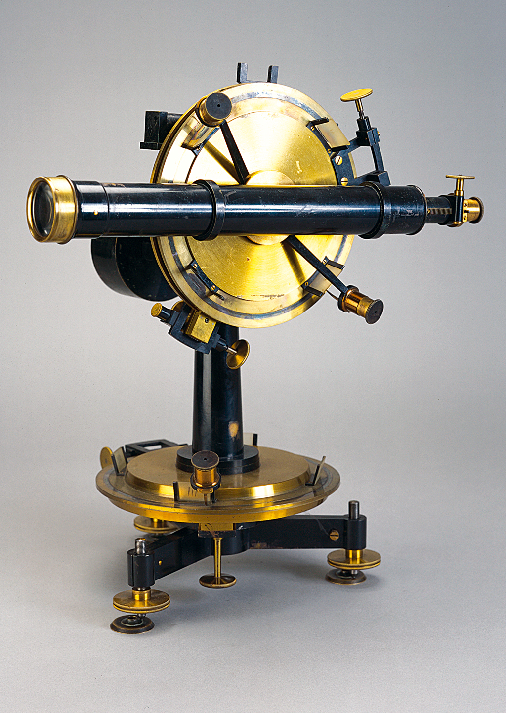
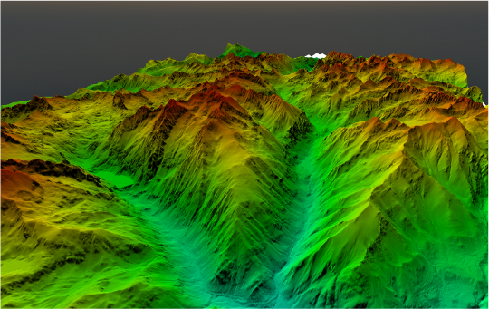

Los primeros mapas y la necesidad de representar el relieve
Desde las primeras civilizaciones, las personas intentaron representar el mundo que las rodeaba. Sin embargo, los mapas antiguos no mostraban el terreno con precisión. Por ejemplo, los egipcios, babilonios y griegos tenían mapas en los que indicaban ríos, caminos y ciudades, pero carecían de detalles sobre la altura o el relieve de las montañas y valles. En cambio, representaban el relieve con dibujos esquemáticos (montañas dibujadas como triángulos, por ejemplo).
Primeros intentos de representar la altitud en mapas (siglo XVI - XVIII)
A medida que el interés por la exploración y el conocimiento geográfico creció en Europa, surgió la necesidad de mapas que representaran el relieve con precisión. Uno de los primeros intentos documentados para mostrar la elevación fue realizado en 1513 por el cartógrafo alemán Johannes Werner, quien sugirió el uso de sombras para dar una sensación de profundidad y relieve en los mapas.
En el siglo XVIII, los ingenieros militares franceses comenzaron a hacer avances importantes. Se dieron cuenta de que la representación precisa del terreno era crucial para la planificación militar y para las obras de ingeniería, como caminos y canales. Aquí fue donde surgieron las primeras representaciones "a nivel de suelo".
Nacimiento de las curvas de nivel (finales del siglo XVIII)
Aunque la idea de representar la altura mediante líneas no fue de un solo inventor, el ingeniero holandés Nicholas Cruquius en 1727 fue uno de los primeros en trazar líneas en un mapa que indicaban profundidades en el mar y ríos. Esto se considera uno de los primeros usos de curvas de nivel para representar la elevación.
Más tarde, en 1774, el científico suizo Johann Georg Lehmann desarrolló un método para representar el relieve con líneas llamadas hachures, que eran pequeñas líneas que mostraban la pendiente. Aunque no eran curvas de nivel, Lehmann fue una de las primeras personas en intentar representar elevaciones con exactitud. Sin embargo, la técnica de las curvas de nivel como la conocemos hoy tomó forma cuando los franceses Charles Dupin y Louis-Alexandre Berthier empezaron a experimentar con líneas de igual elevación en mapas militares hacia finales del siglo XVIII y principios del XIX.
Desarrollo de técnicas topográficas (siglo XX - XXI)
En el siglo XX, las técnicas de levantamiento topográfico se hicieron más precisas gracias al uso de instrumentos como el teodolito (para medir ángulos de elevación) y el nivel de precisión. Sin embargo, fue la llegada de la fotogrametría aérea en la década de 1940 lo que revolucionó el cartografiado topográfico, permitiendo obtener información exacta del relieve desde fotografías tomadas desde aviones. Las curvas de nivel se podían dibujar con mucha más exactitud, y los mapas se hicieron más detallados.
A finales del siglo XX y principios del XXI, la tecnología satelital, como el GPS y la teledetección (uso de satélites para captar información de la Tierra), permitió a los cartógrafos obtener datos topográficos a nivel global. Gracias a esta tecnología, ahora se pueden crear mapas topográficos digitales con una exactitud impresionante y con curvas de nivel mucho más detalladas.
Cartografía moderna y los modelos topográficos digitales
Hoy en día, los Modelos Digitales de Elevaciones (MDE) permiten representar el terreno en tres dimensiones. Estos modelos, construidos a partir de datos de satélite y de escaneo láser, superan las limitaciones de los mapas impresos. En vez de dibujar cada curva de nivel, los Modelos Digitales permiten generar visualizaciones interactivas del relieve, donde los usuarios pueden observar el terreno desde diferentes ángulos.
|
 Fuente: IGN |
 Fuente: Revista muy interesante |

Fuente: Wolf Günther Koch, 2013

Fuente: Carlevaris, L. (2019)

Fuente: IGN
Fuente: Global mediterránea

Fuente: IGN